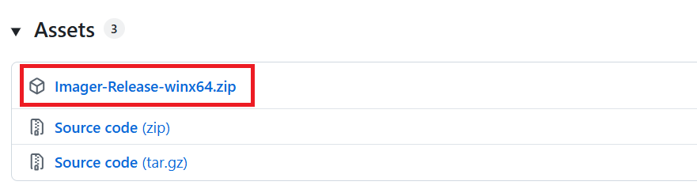

Installation
Imager can either be obtained as pre-compiled binaries (which is the simplest way of installing Imager), or compiled from the source code (advanced).
Download Imager
You can download the pre-compiled binaries for latest Windows (x64) at our GitHub release page:
The pre-compiled binaries are zipped in an archive:

When downloaded, you can extract the archive into the folder of your choice. This is the folder structure that you will see:
├── PluginConfigurations/ -> hardware plugin configurations
├── Plugins/ -> hardware plugins (.imagerplugin)
├── python/ -> embedded python
├── SmartProgramPython/ -> smart program server
├── Config.json -> configuration file for GUI and Imager backend
├── equipment.txt -> hardware implemented directly in Imager
├── Imager.exe -> main executable
├── ImagerAvalonia.Desktop.exe -> graphical user interface
├── LogBookConfigEnd.json -> log book configuration when ending measurement
├── LogBookConfigStart.json -> log book configuration when starting measurement
├── MeasurementImageStorageDLL.dll -> tiff library .dll
└── MeasurementImageStorageDLL.lib -> tiff library .lib
Imager is now installed on your system. To continue, you can take a look at the following useful links: